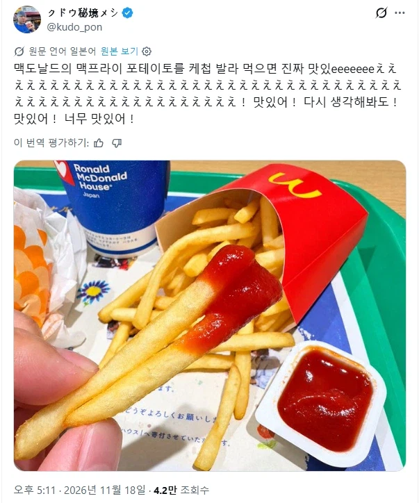

52 · 45 · 23 분 전 · 원문

일본에서는 케찹은 공짜인데 말해야만 준다고
메뉴판에도 없어서 사람들이 당연히 안주는 줄 알고
주는줄 모르니까 당연히 케찹 없이 소금간으로 먹음
수집 당시 댓글 2개
번쩍필살검무 · 4 일 전
리센느 일본 놀러가서 갸루로 하루 지내는편에서 감튀 케찹에 찍어먹던거같은데 기억이 잘못됐나
나는니감정쓰레기통이아니야 · 1 일 전
한두달 전에 젯테리아에서 달라니까 걍 무료로 주던뎅 유료였네;


리센느 일본 놀러가서 갸루로 하루 지내는편에서 감튀 케찹에 찍어먹던거같은데 기억이 잘못됐나